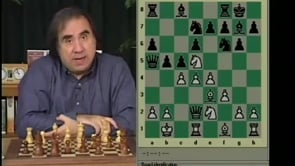

Chess Flea Market
Roman's Lab

You can have 20 videos for a small 5USD donation
- "D:\Ajedrez\Roman´s Lab\RL 001 - Learning Openings the easy way, traps and novelties"
- "D:\Ajedrez\Roman´s Lab\RL 002 - Sacrifices and Tactics that End Games in the Opening"
- "D:\Ajedrez\Roman´s Lab\RL 003 - Transition to the Middlegame"
- "D:\Ajedrez\Roman´s Lab\RL 004 - Art of the Middlegame"
- "D:\Ajedrez\Roman´s Lab\RL 005 - Rapid and Complete Opening Repertoire for the Tournament Player for White"
- "D:\Ajedrez\Roman´s Lab\RL 006 - Rapid and Complete Opening Repertoire for the Tournament Player for Black.avi"
- "D:\Ajedrez\Roman´s Lab\RL 007 - Think and play like a grandmaster"
- "D:\Ajedrez\Roman´s Lab\RL 008 - Comprehensive Chess Endings Part 1"
- "D:\Ajedrez\Roman´s Lab\RL 009 - Comprehensive Chess Endings Part 2"
- "D:\Ajedrez\Roman´s Lab\RL 010 - Greatest Games of Chess Ever Played (1)"
- "D:\Ajedrez\Roman´s Lab\RL 011 - Greatest Games of Chess Ever Played (2)"
- "D:\Ajedrez\Roman´s Lab\RL 012 - New Improvements in Opening Theory for the Competitive Player"
- "D:\Ajedrez\Roman´s Lab\RL 013 - Maximize Your Opening Success with Black for the Ambitious Tournament Player"
- "D:\Ajedrez\Roman´s Lab\RL 014 - Improve your Combinational Preparation and Tactical Skills (1)"
- "D:\Ajedrez\Roman´s Lab\RL 015 - Improve your Combinational Preparation and Tactical Skills (2)"
- "D:\Ajedrez\Roman´s Lab\RL 016 - Learn to Play the English Opening the Easy Way"
- "D:\Ajedrez\Roman´s Lab\RL 017 - Unbeatable Secret Weapons for Black"
- "D:\Ajedrez\Roman´s Lab\RL 018 - Blitz as a Tool to Better Chess & Secrets in Beating Your Chess Computer Programs"
- "D:\Ajedrez\Roman´s Lab\RL 019 - Understanding and Dominating Your Chess Game with Pawn Structures"
- "D:\Ajedrez\Roman´s Lab\RL 020 - Step by Step Essential Maneuvering in Closed Positions"
- "D:\Ajedrez\Roman´s Lab\RL 021 - The Easy Way to Play the King's Indian Defense"
- "D:\Ajedrez\Roman´s Lab\RL 022 - The Easy Way to Play the Scotch and Giuoco Piano Openings"
- "D:\Ajedrez\Roman´s Lab\RL 023 - The Easy Way to Play the Grand Prix and Reti Opening"
- "D:\Ajedrez\Roman´s Lab\RL 025 - Easy way to beat the Pirc-Modern defence"
- "D:\Ajedrez\Roman´s Lab\RL 026 - Nimzowitsch's My System Part 1"
- "D:\Ajedrez\Roman´s Lab\RL 027 - Nimzowitsch's My System Part 2"
- "D:\Ajedrez\Roman´s Lab\RL 028 - Easy Way to Learn The King's Indian Attack"
- "D:\Ajedrez\Roman´s Lab\RL 029 - Mastering the Endgame Series Part 1"
- "D:\Ajedrez\Roman´s Lab\RL 030 - Master the Endgame Series Part 2"
- "D:\Ajedrez\Roman´s Lab\RL 031 - Mastering the Opening Series, A Repertiore for Black, Part 1"
- "D:\Ajedrez\Roman´s Lab\RL 032 - Mastering the Opening Series, A Repertiore for Black, Part 02"
- "D:\Ajedrez\Roman´s Lab\RL 033 - Mastering the Opening Series, Crushing Lines for White"
- "D:\Ajedrez\Roman´s Lab\RL 034 - Repertoire for Black vs. Queen's Gambit"
- "D:\Ajedrez\Roman´s Lab\RL 035 - Mastering the Opening Series, Romans Original D4 Repertoire for White"
- "D:\Ajedrez\Roman´s Lab\RL 036 - The Art of the Defense"
- "D:\Ajedrez\Roman´s Lab\RL 037 - Encyclopedia of Chess Openings - Volume 1"
- "D:\Ajedrez\Roman´s Lab\RL 038 - Encyclopedia of Chess Openings - Volume 2"
- "D:\Ajedrez\Roman´s Lab\RL 039 - Encyclopedia of Chess Openings - Volume 3"
- "D:\Ajedrez\Roman´s Lab\RL 040 - Encyclopedia of Chess Openings - Volume 4"
- "D:\Ajedrez\Roman´s Lab\RL 041 - New Lines & Novelties in the Scotch and f4 Sicilian"
- "D:\Ajedrez\Roman´s Lab\RL 042 - New Lines against the Pirc, Scandinavian & Dragon"
- "D:\Ajedrez\Roman´s Lab\RL 043 - New Lines & Novelties for White Against the Caro Kann, Alekhine & French Defense"
- "D:\Ajedrez\Roman´s Lab\RL 044 - White Novelties in Grand Prix & Others (DVD)"
- "D:\Ajedrez\Roman´s Lab\RL 045 - New Lines for Black in the Accelerated Dragon and King's Indian"
- "D:\Ajedrez\Roman´s Lab\RL 047 - The Most Brilliant Squeezes Ever in the Endgame"
- "D:\Ajedrez\Roman´s Lab\RL 048 - f4-System for White Against the Sicilian Fianchetto and non-Fianchetto"
- "D:\Ajedrez\Roman´s Lab\RL 049 - Magnificent Instructional Masterpieces in The King's Indian Defense"
- "D:\Ajedrez\Roman´s Lab\RL 054 - Capitalizing on Your Opponent's Weaknesses"
- "D:\Ajedrez\Roman´s Lab\RL 055 - A Tribute to Bobby Fischer"
- "D:\Ajedrez\Roman´s Lab\RL 058 - Common Endgame Mistakes"
- "D:\Ajedrez\Roman´s Lab\RL 060 - Attacking Gambits and Opening Pawn Sacrifices"
- "D:\Ajedrez\Roman´s Lab\RL 024 - Live From The Las Vegas Open.avi"
- "D:\Ajedrez\Roman´s Lab\RL 046 - Most Incredible Tactics and Combinations Ever in the Endgame.mp4"
- "D:\Ajedrez\Roman´s Lab\RL 050 - Unsound Openings and How to Exploit Them.mp4"
- "D:\Ajedrez\Roman´s Lab\RL 051 - Building Powerful Attacks by Learning Piece Coordination.mp4"
- "D:\Ajedrez\Roman´s Lab\RL 052 - Finding Tactical Solutions in Overwhelming Positions.mp4"
- "D:\Ajedrez\Roman´s Lab\RL 053 - Improve Your Ability to Calculate Variations.mp4"
- "D:\Ajedrez\Roman´s Lab\RL 056 1. Advantages and Disadvantages of Playing Reverse Openings as White .mp4"
- "D:\Ajedrez\Roman´s Lab\RL 057 1. Man vs. Machine, Roman vs. Rybka.mp4"
- "D:\Ajedrez\Roman´s Lab\RL 059 Attacking the King’s Indian Defense with the Samisch.mp4"
- "D:\Ajedrez\Roman´s Lab\RL 061 Larry Christiansen - Art of Instant Attacks.mp4"
- "D:\Ajedrez\Roman´s Lab\RL 062 Russian School of Chess 1.mp4"
- "D:\Ajedrez\Roman´s Lab\RL 063 Russian School of Chess 2.mp4"
- "D:\Ajedrez\Roman´s Lab\RL 064 Russian School of Chess 3.mp4"
- "D:\Ajedrez\Roman´s Lab\RL 065 - The Difference Between Sound and Unsound Ways To Play Sharp Openings.mp4"
- "D:\Ajedrez\Roman´s Lab\RL 066 - The New and Improved Accelerated Dragon.mp4"
- "D:\Ajedrez\Roman´s Lab\RL 067 - Progessive way of Handling the Maroczy Bind.mp4"
- "D:\Ajedrez\Roman´s Lab\RL 068 - Qd6 Scandinavian, No.1 Underestimated Weapon for Black against 1.e4.mp4"
- "D:\Ajedrez\Roman´s Lab\RL 069 - Dzindzi Anti-English - Complete and Ambitious System for Black against 1.c4.mp4"
- "D:\Ajedrez\Roman´s Lab\RL 070 - Refuting popular Lines in the French, Caro-Kann and Alekhine.mp4"
- "D:\Ajedrez\Roman´s Lab\RL 071 - New Improved Lines and Novelties in the Caro-Kann.mp4"
- "D:\Ajedrez\Roman´s Lab\RL 072 - The Complete Gruenfeld Defense with New Secrets and Novelities 1.mp4"
- "D:\Ajedrez\Roman´s Lab\RL 073 - The Complete Gruenfeld Defense with New Secrets and Novelities 2.mp4"
- "D:\Ajedrez\Roman´s Lab\RL 074 - The Dynamic Catalan An Ambitious Opening Repetorire for White"
- "D:\Ajedrez\Roman´s Lab\RL 075 - Slaying The Dragon.mp4"
- "D:\Ajedrez\Roman´s Lab\RL 076 - Beating 1.d4 With the Aggressive & Revised Dzindzi Indian Defense 1.mp4"
- "D:\Ajedrez\Roman´s Lab\RL 077 - Beating 1.d4 With the Aggressive & Revised Dzindzi Indian Defense 2.mp4"
- "D:\Ajedrez\Roman´s Lab\RL 078 - Razor Sharp Lines in the Semi Slav Defense"
- "D:\Ajedrez\Roman´s Lab\RL 079 - Dynamic Positional Lines in the Semi Slav Defense"
- "D:\Ajedrez\Roman´s Lab\RL 080 - Reversing Of Well Established Evaluations In Giuoco Piano - 2 Knights Defence.mp4"
- "D:\Ajedrez\Roman´s Lab\RL 081 - Easy and Promising Way for White to Play Against the Najdorf Sicilian.mp4"
- "D:\Ajedrez\Roman´s Lab\RL 082 - System for White for the Hippo, Modern and Pirc.mp4"
- "D:\Ajedrez\Roman´s Lab\RL 083 - Staggering New Novelties for White in The Gran Prix Attack.mp4"
- "D:\Ajedrez\Roman´s Lab\RL 084 - Rybkas Quest for Replacing The Ruy Lopez.mp4"
- "D:\Ajedrez\Roman´s Lab\RL 085 - Understanding the concept of middlegame based on opening strategy.mp4"
- "D:\Ajedrez\Roman´s Lab\RL 086 - Highly Instructive and Educational games for the Grand Prix Player.mp4"
- "D:\Ajedrez\Roman´s Lab\RL 087 - Highly Instructive and Educational Games for the Scotch Player.mp4"
- "D:\Ajedrez\Roman´s Lab\RL 088 - Highly Instructive and Educational Games for the Accelerated Dragon Player.mp4"
- "D:\Ajedrez\Roman´s Lab\RL 089 - Educational Games for Black to Play against the Maroczy Bind.mp4"
- "D:\Ajedrez\Roman´s Lab\RL 090 - B&W in the Burn - Morozevich Variation of the French Defence.mp4"
- "D:\Ajedrez\Roman´s Lab\RL 091 - Practical Killer Traps and Super Sharp lines for the 1.e4 Player.mp4"
- "D:\Ajedrez\Roman´s Lab\RL 092 - Staggering Novelties that Rewrite Modern Opening Pages.mp4"
- "D:\Ajedrez\Roman´s Lab\RL 093 - Highly Instructive & Educational English Games.mp4"
- "D:\Ajedrez\Roman´s Lab\RL 094 - Instructive and Educational Dynamic Reti Games.mp4"
- "D:\Ajedrez\Roman´s Lab\RL 095 - Scandinavian Nf6 and Qxd5 Center Counter.mp4"
- "D:\Ajedrez\Roman´s Lab\RL 096 - Dismantling the Petroff defence at the highest level.mp4"
- "D:\Ajedrez\Roman´s Lab\RL 097 - Simple and Comfortable Systems in the Caro Kann.mp4"
- "D:\Ajedrez\Roman´s Lab\RL 098 - c3 Sicilian. Alapin Variation.mp4"
- "D:\Ajedrez\Roman´s Lab\RL 099 - Universal Way against the Slav Systems.mp4"
- "D:\Ajedrez\Roman´s Lab\RL 100 - Centennial Commemorative Edition.mp4"
- "D:\Ajedrez\Roman´s Lab\RL 101 - King's Indian.mp4"
- "D:\Ajedrez\Roman´s Lab\RL 102 - Killing The Sicilian With The Grand Prix Attack.mp4"
- "D:\Ajedrez\Roman´s Lab\RL 103 - Winning with New Attacking Lines Against Highly Popular Openings.mp4"
- "D:\Ajedrez\Roman´s Lab\RL 104 - Tactics in the Najdorf.mp4"
- "D:\Ajedrez\Roman´s Lab\RL 105 - Remarkable Rejunevation in Scandinavian Defence.mp4"
- "D:\Ajedrez\Roman´s Lab\RL 106 - Strategy Behind Blockaded Pawn Positions Right Out of the Opening.mp4"
- "D:\Ajedrez\Roman´s Lab\RL 107 - How to Get an Advantage with Bad Pawns.mp4"
- "D:\Ajedrez\Roman´s Lab\RL 108 - Strategy Behind Learning Tactics.mp4"
- "D:\Ajedrez\Roman´s Lab\RL 109 - Strategy Behind Playing with Strong Outpost.mp4"
- "D:\Ajedrez\Roman´s Lab\RL 110 - Positional Sacrifices for Strategical Gains.mp4"
- "D:\Ajedrez\Roman´s Lab\RL 111 - Highly Instructional Games in The Queen's Gambit Declined.mp4"
- "D:\Ajedrez\Roman´s Lab\RL 112 - Critical Positions in the Nimzo-Indian.mp4"
- "D:\Ajedrez\Roman´s Lab\RL 113 - New Ideas in the King's Indian.mp4"
Contact Me

+524426343045

@gmpa619

@gmpa619

max0922941@outlook.com
Payment Method

max0922941@outlook.com